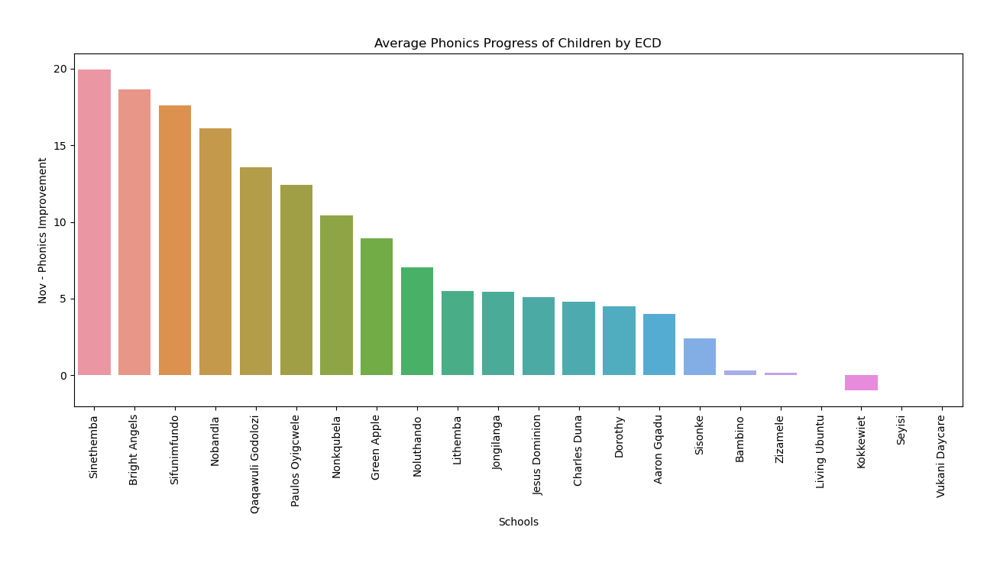

Our ECD children are outperforming their peers by a factor of 5. Our children are mastering their listening skills, letter sounds, and early phonics while their peers are not.
The children on the Masi ECD programme FAR outperform the control groups in the ECD sector. Note that there is huge variance among our ECD centers, something we must focus on improving in 2024. In many ECDCs, we take all the children, hence the lack of a control group.
Letter sounds and phonics were the major focus in our ECD Centers in 2023. The graph below is the best indicator of quality of programme run at different centers.
We had huge variance in the number of sessions children received per ECD. Note that this is affected by 'Start Date' of the programme at the ECD as well as the ratio of children to literacy coaches.
This shows the total number of sessions run on the year. Note that it's different than average session per child. Living Ubuntu, with a very high per session ratio, has a relatively low number of total sessions run.
This shows the total improvement divided by the total number of sessions run on the year. It can be viewed as a proxy for 'quality' of the sessions.